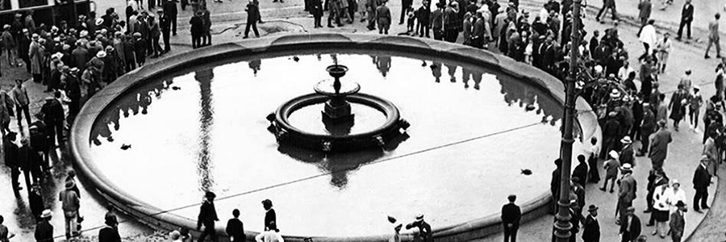
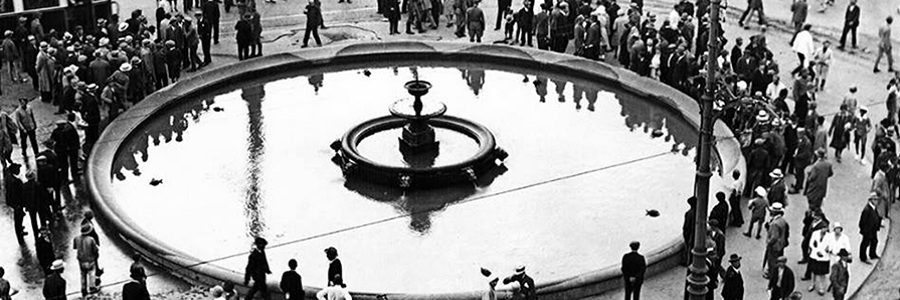

Стари двор
Изглед Старог двора,
са куполама пре бомбардовања
Стари двор је репрезентативно здање које је краљ Милан Обреновић подигао у периоду 1881-1884, како би превазишла све досадашње резиденције српских владара. Налази се на углу улице Краља Милана и улице Драгослава Јовановића, чији главни улаз гледа на Трг Николе Пашића. Пројекат је био Александра Бугарског. Стари двор су првобитно красиле две велике куполе према башти са позлаћеном круном на врху. Стари двор има приближно квадратну основу. Њено решење је класично, са централним унутрашњим сали. Ту је некада била стаклене баште и богато украшене степенице додате касније, које су водиле на први спрат (пројектовао их је познати архитекта Јован Илкић). Око овог централног простора са стубовима и галеријама било је и других просторија двора, најважнији од њих су велика сала за пријеме и балове и трпезаријом. Као дело двора су биле и лепо уређена библиотека и дворска капела, према башти. Цела унутрашњост двора је оремлјена углавном из Беча. Најкарактеристичнији мотиви на фасади су каријатиде у висини првог спрата. Међутим, како је зграда тешко оштећена у оба Светска рата, данашњи изглед Старог двора се делимично разликује од првобитног. Поменуте куле су биле срушене те су биле уклоњене као и Дворска капела или су измењени до непрепознатљивости, велико степенисте, Престона дворана, те су замењени новим изгледом. У социјалистичком периоду, главни торањ је красила звезда петокрака, која је током демонстрације 1996-1997. замењена позлаћеним двоглавим орлом раширених крила, даром београдских златара.
Данашњи изглед Старог двора
Двор је била збанична Краљевска Резиденција, краља Петра I Карађорђевића, а касније и његовом сину, краљу Александру. Али је палата коришћена и у друге сврхе, тако да је овде 1919. и 1920. године заседала Скупштина Краљевине Срба, Хрвата и Словенаца. У овим двору су приређивани званични пријеми и друге државне функције.
Данас се користи као зград Скупштине Града Београд.

{kind=link}
{kind=link}